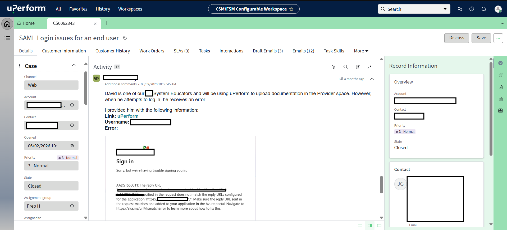
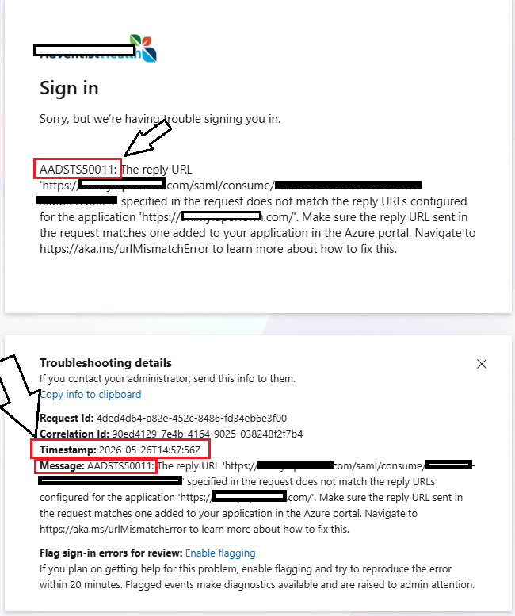
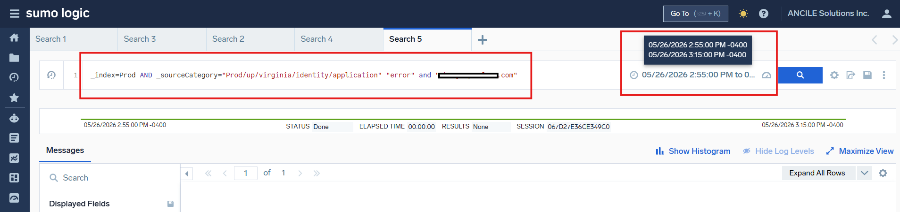

Resolving Complex IAM & Azure SSO Authentication Failures
Diagnosed and successfully resolved a recurring user login roadblock for a returning employee by identifying a hidden SAML claims conflict inside enterprise logs, restoring secure access with zero data loss.
01 Business Problem
Context & Organization: Operating within our SaaS learning and documentation platform environment (uPerform), healthcare and enterprise clients rely heavily on seamless Single Sign-On (SSO) integrations via Microsoft Entra ID (Azure AD) to manage secure staff onboarding and access into our system.
The Core Challenge: A support ticket was escalated via ServiceNow by one of our clients regarding a returning employee who previously left their organization. Despite having an active, unchanged Active Directory account, the user hit a wall during authentication, encountering Microsoft error code AADSTS50011 (Redirect URI mismatch).
Business Impact: Authentication friction stalls workforce productivity and frustrates stakeholders. Left unresolved, identity anomalies risk creating administrative overhead and ticket bloat.
02 Technical Approach & Methodology
Tools & Frameworks: ServiceNow, Microsoft Entra ID (Azure AD), Sumo Logic, Custom Log Analysis, CSV Data Bulk-Handling, ITIL Incident Management Guidelines.
Step-by-Step Implementation Workflow:
- Phase 1 (Triage & Scoping): Acknowledged the incoming ServiceNow case. Conducted initial stakeholder outreach to isolate variables: verified whether the disruption impacted multiple users or a single profile, gathered precise timestamps for the latest login attempt to anchor log searches, and cross-referenced expected AD attributes (username and corporate email).
- Phase 2 (Deep-Dive Log Inspection): Performed a preliminary audit of the user profile within the system console. Seeing no obvious flags, I transitioned to Sumo Logic, executing a targeted custom query filtering against the client instance domain (
xxxx.xxxxx.com) to review real-time authentication traffic. - Phase 3 (Root Cause Identification & Remediation): Uncovered a SAML claims conflict indicating that the inbound authentication string matched a username already recognized as "in use." After tracking down an old, deactivated account holding onto the conflicting identifier, I performed a controlled data import via CSV—validating table schema and referential constraints to safely isolate the historical record and provision the proper credentials to the active user profile.
03 Evidence & Key Deliverables
Artifact 1: ServiceNow Intake Ticket
The incident originated from a user-submitted support request detailing login blockages and capturing the initial client perspective.

Artifact 2: Initial Error Diagnostics & Redirect Validation
The user additionally reported error code AADSTS50011, typically triggered when callback URLs sent during authentication requests drift from the registered Entra ID application settings.

Artifact 3: Sumo Logic Log Analysis & Claims Conflict Detection
By running a search in Sumo Logic, I found the exact roadblock: the login failed because the incoming identity data clashed with an old record left in the system.
# Sumo Logic Log Output Extract - Client Instance: xxxx.xxxxx.com
2026-10-12 14:22:10 [ERROR] [AuthService] - SAML Assertion validation failed for user principal: "xxxxx".
2026-10-12 14:22:10 [WARN] [IDP-Bridge] - Authentication token rejected: Username claim value already in use by inactive entity ID #4092.
2026-10-12 14:22:10 [INFO] [SessionMgr] - User login aborted. Redirecting to error handler endpoint.
04 Outcome & Lessons Learned
Results Achieved:
- Successfully restored seamless Azure SSO access for the returning employee within the established SLA window (under 2 hours from escalation) following a structured CSV identifier re-mapping.
- Eliminated silent identity synchronization bottlenecks caused by dormant or legacy account states lingering in database tables with zero data loss.
Key Takeaways & Lessons Learned:
- Holistic Identity Auditing: Surface-level profile checks can easily miss underlying database uniqueness constraints caused by historical, deactivated records. Robust troubleshooting requires deep-diving into identity lifecycles.
- Proactive Stakeholder Management: Clear communication during ticket intake—such as verifying precise timestamps and scope—drastically reduces diagnostic turnaround time.